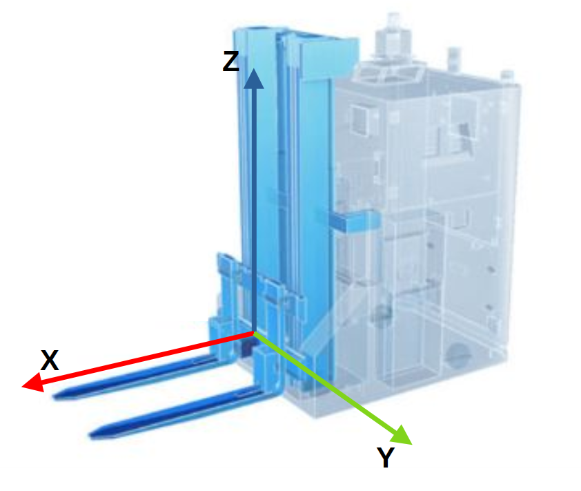

Camera calibration for PDS
The PDS application always returns the position of an object with respect to the calibrated coordinate system. Typically, the calibrated coordinate system corresponds to the fork tines, so that the coordinate system will go up and down with the forks and the pallet position will always be provided with reference to the current position of the forks.
Concepts
PDS coordinate system
PDS expects the orientation of the coordinate system to be as follows:
X is pointing in direction of the forks,
Y is pointing to the left of the forks,
Z is pointing up.
When uncalibrated, the camera coordinate system is such that Z is pointing away from the camera, and X is pointing away from the cables. This is represented in the image below:
The uncalibrated coordinate system does not correspond to what PDS expects. Consequently, if no calibration is set, PDS will raise an error.
To fit the expected coordinate system of PDS, the coordinate system has to be rotated. An example of a correctly calibrated coordinate system would be as shown in the image below, where the origin of the coordinate system is placed at the center of the base of the forks:

Note that the user can decide where to place the origin of the coordinate system. We show a couple of examples below.
PDS will look for a pallet within a defined volume of interest. By default, it expects the camera to be placed at approximately the same level as the bottom plane of the pallet. For more details about the volume of interest for the different PDS commands, refer to their respective documentation.
Note that errors in the camera calibration will lead to errors in the position of the targeted object. If CAD data is known to be precise enough, it can be used to extract calibration values for the camera. Otherwise, any of the calibration methods provided by ifm can be used.
Robot Coordinate System
PDS’ coordinate system will most often be different from the Robot Coordinate System (RCS):
The RCS is usually in a fixed position on the robot’s chassis, whereas PDS’ coordinate systems moves with the forks. The transformation between the RCS and the PDS coordinate system will depend on the position of the forks and has to be implemented by the user.
The RCS is typically in the middle of the steering axis, whereas PDS’ coordinate system is located around the forks base or tip.
In general, the axis of the RCS and the PDS coordinate systems will be parallel. The X axis of the RCS usually points in the direction of travel, and PDS’ coordinate system X axis points in the direction of the forks, which would typically be towards the back of the vehicle. The Z axis will point upwards in both coordinate system.
Note
Note that these comments represent most typical use cases, but your coordinate system might be different. The coordinate system can be adjusted to fit your specific setup.
Examples
Tip of fork coordinate system
Let’s take for example a camera mounted horizontally, looking straight ahead, directly between the two forks. Let’s assume the fork tines coordinate system’s origin is at the tip of the right fork, like shown in the image below:
Let’s also assume the following measurements:
Then, the values for the rotation and translations are as follows, shown in the Vision Assistant calibration wizard:
This is equivalent to setting the following parameters in the relevant port’s JSON configuration:
{
"ports":{
"portX":{
"processing":{
"extrinsicHeadToUser":{
{
"rotX": 0.00,
"rotY": 1.57,
"rotZ": -1.57,
"transX": 1.00,
"transY": 0.25,
"transZ": 0.05
}
}
}
}
}
}
Base of forks coordinate system
Let’s take another example and assume the camera is mounted horizontally pointing forward, directly between the two forks, and the origin of the coordinate system is at the base of forks, right between the two forks, as shown in the image below:
Let’s assume that the center of the coordinate system is 5 cm below the camera, and on the same (YZ) plane:

With these measurements, we would have the following calibration values: This is equivalent to setting the following parameters in the relevant port’s JSON configuration:
{
"ports":{
"portX":{
"processing":{
"extrinsicHeadToUser":{
{
"rotX": 0.00,
"rotY": 1.57,
"rotZ": -1.57,
"transX": 0.00,
"transY": 0.00,
"transZ": 0.05
}
}
}
}
}
}